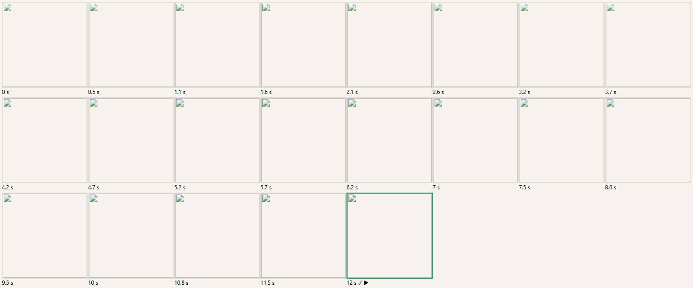
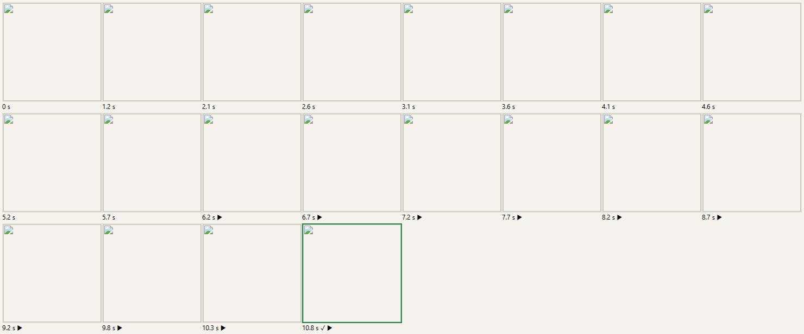
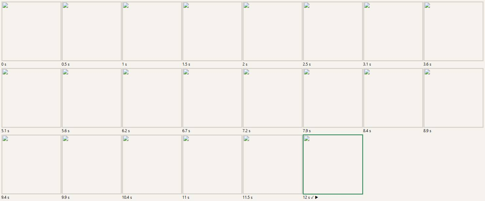
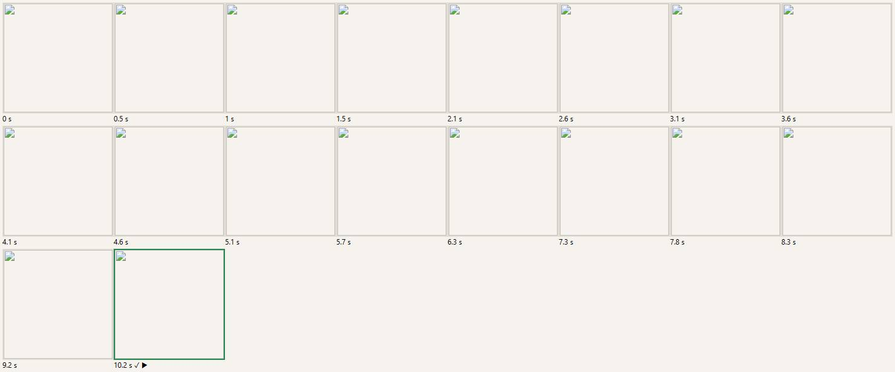
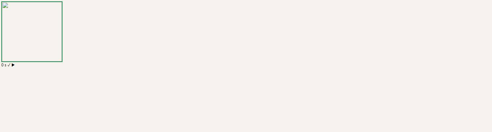
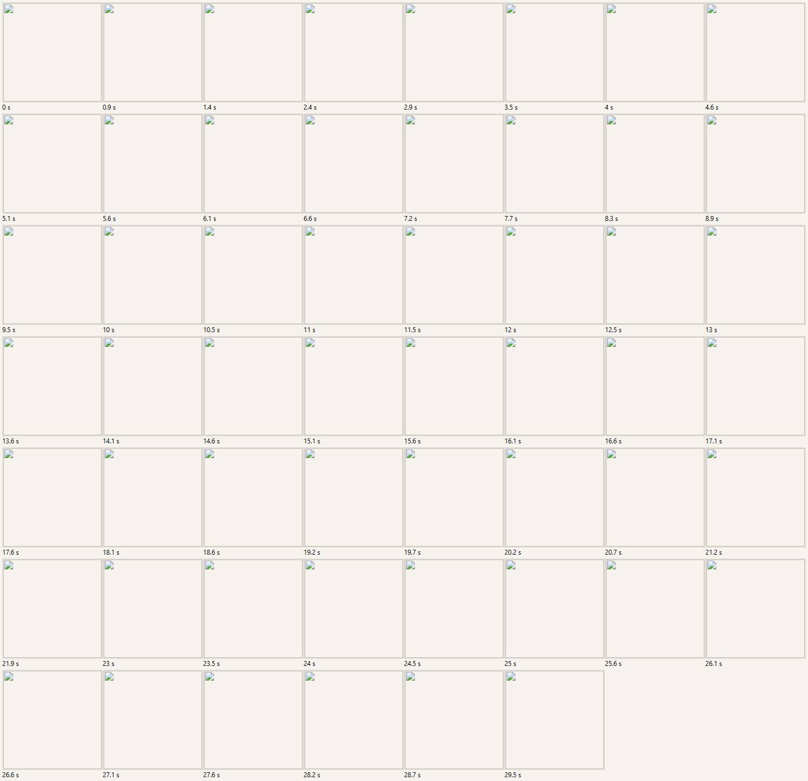

Film des attentes : têtes et objets
6/13 critères verts
| Critère | Verdict | Mesure |
|---|---|---|
| Texte progressif (≥ 3 états intermédiaires) — tête | ROUGE | 2 textes différents avant la tête |
| Texte progressif (≥ 3 états intermédiaires) — objet | VERT | 5 textes différents avant l'objet 3D |
| L'image se révèle — tête | ROUGE | images visibles : 5 → 5 |
| L'image se révèle — objet | VERT | images visibles : 1 → 4 |
| Le 3D se construit — tête | VERT | canvas dans l'écran : 1 |
| Le 3D se construit — objet | ROUGE | canvas dans l'encart : 0 |
| Aucune seconde où rien ne bouge — tête | VERT | plus longue immobilité : 0.5 s |
| Aucune seconde où rien ne bouge — objet | VERT | plus longue immobilité : 0 s |
| Validation bloquée tant que la tête n'est pas affichée | VERT | bouton « Ready » bloqué avant la tête ; tête affichée : oui (12 s) |
| Validation bloquée tant que l'objet 3D n'est pas affiché | ROUGE | bouton « Confirm » ACTIF avant l'objet 3D ; objet 3D affiché : oui (10.8 s) |
| Réseau ralenti de 8 s : on reste sur l'écran, la progression continue | ROUGE | tête affichée à 12 s, immobilité max 1 s, message : aucun · objet affiché à 10.2 s, immobilité max 0 s, note : Gemini didn't answer in time. Backup weapon issued: hit Retry to snap again. |
| API coupée : boutons Retry et Default — tête | ROUGE | boutons : Retry, Use my voice, Use my voice, Ready to fight! ; message : Your cartoon head didn't come out this time. Try again, or fight as is. |
| API coupée : boutons Retry et Default — objet | ROUGE | boutons : blaster, grenade, throwable, shield, Confirm, Retry, Pick 3 more |
Bandes
Réseau normal — tête (visage fictif)

Réseau normal — objet (chaise, photo masquée)

Réseau ralenti de 8 s — tête

Réseau ralenti de 8 s — objet

API coupée — tête

API coupée — objet
